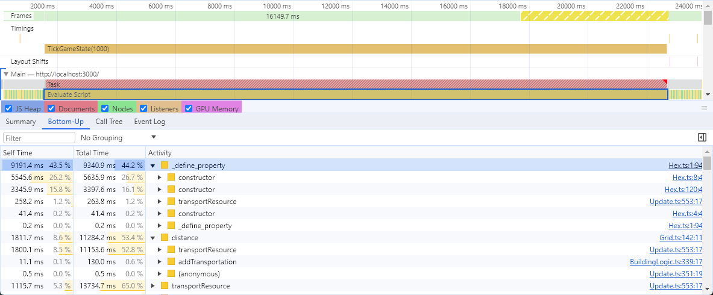
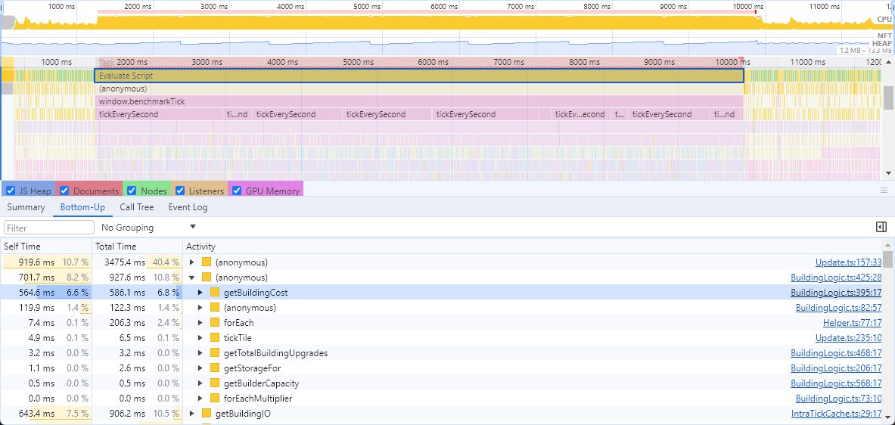

자동화 게임 극한까지 자바스크립트 성능 끌어올리기
Industry Idle 출시 직후에 글로도 작성 했었던 대대적인 최적화 작업을 진행했습니다. Industry Idle 게임을 한 번도 해보지 않은 분들을 위해 설명하자면, 이 게임은 공장 자동화 및 경제 시뮬레이션 게임입니다. 제가 직면한 주요 성능 문제는 렌더링 측면에서 발생했는데, 게임에서 미니멀한 그래픽을 제공하고 있다는 점을 생각하면 의외였습니다.

왜 다시 타입스크립트/자바스크립트인가?
후속작인 CivIdle 작업을 하기로 결정했을 때, 저는 처음부터 다시 작성하기로 했습니다. CivIdle에서는 Industry Idle의 핵심 아이디어에 역사적 테마를 도입했습니다. 이 게임에는 테크 트리, 세계 불가사의, 위인 등 몇 가지 새로운 메커니즘이 추가되어 게임의 시뮬레이션이 더욱 복잡해졌습니다.
모든 것을 다시 작성하고 있기 때문에 타입스크립트 이외의 언어도 살펴보았습니다. 고성능 코드를 작성해야 할 때 저는 보통 타입스크립트/자바스크립트는 가장 먼저 선택하지는 않습니다. 하지만 Industry Idle 코드베이스를 살펴본 결과, 게임 코드의 90%가 UI이며 웹 플랫폼이 이 부분에 매우 적합하다는 결론에 도달했습니다. 웹 프레임워크가 어렵다고 생각하신다면 게임 UI 라이브러리/미들웨어를 사용해보시기 바랍니다. CivIdle 코드의 대부분은 UI 코드가 될 가능성이 높기 때문에 UI는 웹 플랫폼에 머물고 싶었지만, 추가로 몇 가지 선택지가 있어 살펴봤습니다.
Industry Idle 처럼 웹 플랫폼 사용: UI에는 HTML을 사용하고 게임 렌더링에는 WebGL을 사용하며, 두 가지 모두 타입스크립트로 작성.
위와 동일하지만 게임 로직과 렌더링에 웹 어셈블리를 사용하고 UI는 HTML/타입스크립트로 유지.
게임 로직과 렌더링을 C++로 작성하고, 3D 컨텍스트 위에 HTML 렌더링을 지원하는 미들웨어(1, 2)를 사용.
저는 3번 선택지를 적용하기 위해 테스트해봤지만 필요한 브릿징 코드의 양이 너무 많아서 금방 포기했습니다. 모든 미들웨어는 브라우저에 비해 수준 이하의 개발자 도구를 제공하기 때문에 개발, 특히 디버깅이 상당히 고통스러웠습니다. 또한 게임 상태와 같은 대용량 데이터를 C++와 자바스크립트 간에 안전하고 효율적으로 공유하는 것도 쉬운 일이 아닙니다. 2번 선택지는 UI 작업 시 개선된 툴을 제외하면 비슷한 문제를 겪습니다. 결국 저는 1번을 선택하게 됩니다.
모든 교훈을 되새기며
Industry Idle 렌더링 성능 문제는 대부분 게임 엔진(Cocos Creator)에서 발생합니다. 이 엔진은 비주얼 에디터와 자체 씬 그래프/프리팹(prefab) 시스템을 갖춘 Unity와 유사한 올인원 게임 엔진으로 설계되었습니다. 저는 이 엔진의 렌더링만 사용하지만, 설계된 사용 사례가 아니기 때문에 성능을 위해 렌더러를 커스터마이징하기가 쉽지 않습니다.
CivIdle의 경우 가장 빠른 WebGL 렌더러 중 하나인 Pixi.JS를 선택했습니다. 한 가지 일만 잘 해내는데, 제가 필요한 기능을 정확히 수행합니다. 나만의 WebGL 렌더러를 만들까도 잠시 고민했지만 Pixi.JS보다 더 잘할 수 없을 것 같다는 결론을 내렸습니다.
가능한 한 객체들은 풀링되었고, 텍스처는 최적화되어 아틀라스(atlases)에 패킹되었으며, 드로 콜(draw calls)을 꼼꼼히 확인하고, Industry Idle에서 문제가 되는 작은 점들을 특화된 ParticleContainer를 사용하여 구현하는 등 Industry Idle에서 배운 모든 교훈을 바탕으로 더 높은 기준을 가지고 시작했습니다.
유일한 문제는 MSDF 글꼴 렌더링이 지속적으로 일괄 처리를 중단한다는 점(자체 셰이더가 필요하기 때문에)으로, 품질이 약간 떨어지긴 했지만 기존 비트맵 글꼴로 대체했습니다.
성능의 벽에 부딪히기
Industry Idle의 가장 큰 구조적 결함은 게임 로직과 렌더링이 긴밀하게 결합되어 있어 렌더링 없이는 게임 로직을 실행할 수 없다는 것입니다 Industry Idle에서 오프라인 수익(게임을 플레이하지 않아도 얻을 수 있는 수익)은 근사치 계산을 통해 이루어집니다. 저 같은 하드코어 시뮬레이션 게임 팬에게는 속임수처럼 느껴지지만, 시뮬레이션 게임에서는 모든 것을 충실하게 시뮬레이션하는 것이 중요하다고 생각합니다. 따라서 오프라인 수입은 오프라인 시간을 가져와 해당 기간 동안 실제 시뮬레이션을 실행하는 것이 이상적입니다.
CivIdle에서는 시뮬레이션과 렌더링이 완전히 분리되어 "모든 것을 시뮬레이션"하는 디자인을 구현했습니다. 오프라인 수익 창출 기능을 구현하고 처음으로 큰 맵에서 실행해 본 결과, 1시간 시뮬레이션을 실행하는 데 약 43초가 걸렸으며, 이는 게임 초당 약 12ms의 벽시계 시간(wall clock time)입니다. 즉, 플레이어가 하루 동안 오프라인 상태였다면 시뮬레이션이 이를 따라잡는 데 약 17분이 걸린다는 뜻입니다! 오프라인 제작 기능을 플레이 테스터에게 처음 공개했을 때 게임이 로딩할 때 '멈춘다'는 버그 보고를 여러 번 받았지만, 실제로는 멈춘 것이 아니라 따라잡는 속도가 고통스러울 정도로 느릴 뿐이었습니다.
다시 말해, 12ms는 부드러운 60FPS를 구현하기 위한 프레임 시간 예산인 16.67ms 이내입니다 하지만 이는 합리적인 오프라인 프로덕션 성능을 달성하기에는 충분하지 않습니다. 게임 로직은 단일 스레드에서 실행되므로 병렬화가 쉽지 않고, 자바스크립트에 멀티스레드를 추가하려면 설정이 쉽지 않은 웹 워커가 필요합니다. 또한 웹 워커는 메인 스레드의 잠금을 해제하는 데 도움이 될 수 있지만 전체 시간을 단축하지는 못할 것입니다. 따라서 가능한 한 싱글 스레드 성능을 최대한 끌어내야 합니다.
항상 할당입니다!
최적화를 시작하기 전에 CPU 시간이 어디에 사용되는지 파악해야 합니다. 다행히도 브라우저에는 매우 훌륭한 프로파일링 도구가 있습니다. Chrome에서 프로파일 세션을 실행하면 다음과 같은 결과가 나타납니다.

프로파일러는 성능 저하의 주요 원인이 될 수 있는 함수를 보여 주는데, 이는 매우 희망적인 상황입니다. 이는 일반적으로 쉽게 개선할 수 있는 문제를 의미합니다. 문제의 함수는 바로 이것입니다.
public distance(x1: number, y1: number, x2: number, y2: number): number {
const oc1 = new OffsetCoord(x1, y1);
const hex1 = OffsetCoord.roffsetToCube(OffsetCoord.ODD, oc1);
const oc2 = new OffsetCoord(x2, y2);
const hex2 = OffsetCoord.roffsetToCube(OffsetCoord.ODD, oc2);
const distance = hex1.distance(hex2);
return distance;
}이 코드는 육각형 격자에서 두 타일 사이의 거리를 계산하는 것입니다. 이 코드는 뻔뻔하게도 Red Blob Games의 뛰어난 레퍼런스육각 그리드 구현에서 복사한 것입니다. 실제 계산은 프로파일러에 나타나지 않고 모든 작은 오브젝트를 할당하는 것입니다!
값 타입이 존재하는 언어에서는 일반적으로 큰 문제가 되지 않습니다. 이러한 값들은 스택에 할당할 수 있으며 일반적으로 매우 빠릅니다. 자바스크립트 VM(V8)에서는 거의 모든 것이 힙에 할당되며(나중에 설명할 "작은 정수" 제외), 이러한 객체를 구성하는 작업(프로토타입 체인 설정)은 의외로 무겁습니다. 해결책은 이러한 객체를 매번 할당하는 대신 정적으로 캐시된 사본을 사용하는 것입니다. 또한 할당하지 않는 버전의 API를 추가해야 하는데, 이는 전달받은 객체(캐시된 정적 객체)에 결과를 설정하거나 객체 중 하나(다시 캐시된 정적 객체)를 변경하는 것입니다. 새 코드는 다음과 같습니다.
private static _oc1 = new OffsetCoord(0, 0);
private static _oc2 = new OffsetCoord(0, 0);
private static _hex1 = new Hex(0, 0, 0);
private static _hex2 = new Hex(0, 0, 0);
public distance(x1: number, y1: number, x2: number, y2: number): number {
Grid._oc1.col = x1;
Grid._oc1.row = y1;
OffsetCoord.roffsetToCubeNonAlloc(OffsetCoord.ODD, Grid._oc1, Grid._hex1);
Grid._oc2.col = x2;
Grid._oc2.row = y2;
OffsetCoord.roffsetToCubeNonAlloc(OffsetCoord.ODD, Grid._oc2, Grid._hex2);
const distance = Grid._hex1.distanceNonAlloc(Grid._hex2);
return distance;
}새 코드는 훨씬 더 나빠 보이고 스레드에서 안전하지 않지만 어쨌든 우리는 단일 스레드입니다. 동일한 프로필을 실행하면 전체 시간이 21초에서 9초로 단축됩니다! 이것은 정말 쉬운 개선입니다!

메모이제이션과 캐싱
프로필 결과를 다시 살펴보니 몇 가지 함수가 눈에 띄었습니다. 이 함수는 CPU 시간을 상당히 많이 차지하지만 외부 상태에 의존하지 않고 부작용이 없는 "순수한" 계산만 포함하고 있습니다.
예제는 다음과 같습니다(함수 시그니처를 단순화했습니다. 실제 코드 베이스에서는 string은 타입을 가지고 있지만 여기서는 상관없습니다).
function getBuildingCost(type: string, level: number): Record<string, number>;이는 메모이제이션의 좋은 대상입니다.
메모이제이션은 매번 계산하는 대신 계산 결과를 캐시에 저장해 둔다는 것을 멋지게 표현한 것입니다.
일반적인 memoize 함수는 다음과 같습니다.
function memoize(func) {
const results = {};
return (...args) => {
const argsKey = JSON.stringify(args);
if (!results[argsKey]) {
results[argsKey] = func(...args);
}
return results[argsKey];
};
}인자에 대한 "해시"를 만들기 위해 JSON.stringify(args)를 사용하는 것은 끔직하게 비효율적 입니다.
getBuildingCost의 경우에는 아마도 인자를 그냥 이어 붙힐 수 있습니다.
여러 함수가 계산을 위해 외부 상태에 의존하지만, 프레임 내에서 상태가 변경되지 않습니다. 결과를 캐시하고 새 프레임이 시작될 때 캐시를 지울 수 있습니다.
메모 기능을 추가하면 전체 시간을 2초 정도 단축할 수 있는데, 나쁘지 않습니다!
문자열 제거하기!
안타깝게도 우리가 기대했던 열매는 모두 수확했습니다. 이 시점에서 코드의 핫스팟은 대부분 문자열과 관련이 있습니다.
이전 메모이제이션 예제에서 이미 문자열 키를 사용했습니다.
게임에서는 타일을 나타내기 위해
{x, y}를 사용하고 있고 키가 필요할 때마다"x,y"문자열을 사용하고 있습니다. 몇몇 핫스팟은 두 형식간의 변화와 관련이 있습니다.
문자열을 사용하면 코드를 쉽게 읽을 수 있습니다. 하지만 안타깝게도 코드 실행 속도가 느려지기도 합니다. 하지만 문자열을 제거하는 것이 항상 쉬운일은 아닙니다. 타일을 표현하는 경우 x와 y를 정수로 패킹할 수 있습니다.
const tile = (x << 16) | y;앞서 자바스크립트(V8)에서 작은 정수, 즉 기본적으로 포인터에 들어갈 수 있는 정수를 제외한 거의 모든 것이 힙에 할당된다고 언급했습니다. 하지만 32비트 플랫폼에서는 V8이 1비트를 사용해 포인터와 실제 숫자를 구분하기 때문에 정수가 31비트에 맞아야 한다는 문제가 있습니다. 그리고 64비트 플랫폼에서는 포인터 압축으로 인해 정수가 여전히 32비트에 맞아야 합니다. 제가 계획한 가장 큰 맵은 200x200 정도인데 15비트는 여전히 필요한 것보다 많기에 저희에게는 문제가 되지 않습니다. 한 가지 주의할 점은 자바스크립트에는 '정수'라는 개념이 없고 모든 숫자가 배정밀도 부동 소수점이라는 점입니다. 따라서 이것은 본질적으로 벤더별 최적화입니다. 하지만 V8이 매우 일반적으로 사용되고 있고 게임이 일렉트론으로 출시되었기 때문에 이 최적화는 꽤 합리적입니다.
캐시/메모화를 위해 31비트 정수 키를 생성하는 경우에는 좀 더 까다롭습니다. 게임 데이터의 대부분은 문자열로 되어 있으며, 이 방식이 더 바람직합니다. 데이터를 자주 조정하기 때문에 문자열이 훨씬 읽기 쉽기 때문입니다. 대신 게임이 시작되면 모든 데이터를 검토하여 각 항목에 대해 자동 증가 숫자 키를 생성합니다. 또한 부울 플래그 객체 대신 타입스크립트의 열거형 플래그를 사용합니다. 예시는 아래와 같습니다.
// Before
function calculate(
building: string,
options: { flag1: boolean; flag2: boolean; flag3: boolean },
) {}
// After
export enum Options {
None = 0,
Flag1 = 1 << 0,
Flag2 = 1 << 1,
Flag3 = 1 << 2,
TotalBits = 3,
}
function calculate(building: string, options: Options) {
const hash = (BuildingHash[building] << Options.TotalBits) | options;
}(숫자 키를 사용하는)Map/Set 채택
저는 고성능 자바스크립트를 전문적으로 작성하지 않고(고성능 코드를 작성하긴 하지만 다른 언어로 작성합니다), 자바스크립트 세계의 최신 기술을 잘 따르지 않기 때문에 자바스크립트 성능 전문가가 아니라는 사실을 인정합니다. 자바스크립트에서 Map/Set의 존재를 어렴풋이 알고는 있지만 항상 평범한 오래된 객체를 사용해 왔습니다. 그래서 게임에서 흔히 사용되는 패턴의 일부를 간단히 마이크로 벤치마크해 보았습니다.
new Bench.add("access obj (number key)", () => {
let sum = 0;
for (let i = 0; i < 1000; i++) {
sum += numObj[(i << 16) | i];
}
})
.add("access map (number key)", () => {
let sum = 0;
for (let i = 0; i < 1000; i++) {
sum += numMap.get((i << 16) | i);
}
})
.add("access obj (string key)", () => {
let sum = 0;
for (let i = 0; i < 1000; i++) {
sum += strObj[`${i},${i}`];
}
})
.add("access map (string key)", () => {
let sum = 0;
for (let i = 0; i < 1000; i++) {
sum += strMap.get(`${i},${i}`);
}
});결과의 순위는 그다지 놀랍지 않지만 차이점은 있었습니다! 숫자(작은 정수) 키가 더 빠르다는 것은 알고 있었지만 이렇게까지 빠를 줄은 몰랐습니다. 또한 숫자 키와 맵의 조합이 승리한 것으로 보아, 문자열을 작은 정수로 대체하는 수고로움에 대한 보상을 받은 셈입니다!
┌───────────────────────────┬───────────┬────────────────────┬──────────┬─────────┐
│ Task Name │ ops/sec │ Average Time (ns) │ Margin │ Samples │
├───────────────────────────┼───────────┼────────────────────┼──────────┼─────────┤
│ 'access obj (number key)' │ '60,121' │ 16632.928519960293 │ '±0.59%' │ 6013 │
│ 'access map (number key)' │ '245,327' │ 4076.1832382745756 │ '±0.65%' │ 24533 │
│ 'access obj (string key)' │ '10,316' │ 96930.13813144476 │ '±4.19%' │ 1032 │
│ 'access map (string key)' │ '17,543' │ 57001.994138429654 │ '±1.53%' │ 1755 │
└───────────────────────────┴───────────┴────────────────────┴──────────┴─────────┘map vs object를 순회하는 밴치마크도 진행했습니다.
new Bench.add("iterate obj (number key)", () => {
let sum = 0;
for (const key in numObj) {
sum += numObj[key];
}
})
.add("iterate map (number key)", () => {
let sum = 0;
for (const [_, value] of numMap) {
sum += value;
}
})
.add("forEach map (number key)", () => {
let sum = 0;
numMap.forEach((val) => {
sum += val;
});
})
.add("iterate obj (string key)", () => {
let sum = 0;
for (const key in strObj) {
sum += strObj[key];
}
})
.add("iterate map (string key)", () => {
let sum = 0;
for (const [_, value] of strMap) {
sum += value;
}
});아래 표가 결과 입니다
┌────────────────────────────┬───────────┬────────────────────┬──────────┬─────────┐
│ Task Name │ ops/sec │ Average Time (ns) │ Margin │ Samples │
├────────────────────────────┼───────────┼────────────────────┼──────────┼─────────┤
│ 'iterate obj (number key)' │ '5,769' │ 173319.23769086445 │ '±1.42%' │ 577 │
│ 'iterate map (number key)' │ '178,355' │ 5606.781289537164 │ '±1.94%' │ 17858 │
│ 'forEach map (number key)' │ '185,631' │ 5387.017655490776 │ '±0.55%' │ 18564 │
│ 'iterate obj (string key)' │ '25,965' │ 38512.431584109334 │ '±1.42%' │ 2598 │
│ 'iterate map (string key)' │ '179,725' │ 5564.040455324439 │ '±2.05%' │ 17973 │
└────────────────────────────┴───────────┴────────────────────┴──────────┴─────────┘숫자 키를 사용하는 Map이 다시 한번 더 승리했습니다 (숫자 키로 객체를 반복하는 것이 그렇게 느리다는 사실은 약간 의아합니다)
주의사항
문자열을 없애고 객체를 Map/Set으로 대체하면 전체 시간이 약 3초 정도 감소합니다.
이 시점에서 전체 시간이 21초에서 4초로 단축되었습니다.
하지만 이 두 가지 최적화에는 많은 작업이 필요했고, 며칠이 걸렸으며 몇 가지 지저분한 버그도 해결해야 했습니다.
또한 C/C++와 같은 언어에 비해 자바스크립트에서 마이크로 최적화를 수행하는 것이 훨씬 더 어렵다는걸 알게되었습니다.
마이크로 벤치마킹은 신뢰할 수 없을 수 있습니다. JIT는 워밍업이 필요합니다. 가비지 수집기를 끌 수 없습니다.
최적화는 V8의 특정 구현에 대해 수행되며, 이는 변경될 수 있습니다. 그리고 V8의 내부를 파악하는 것은 사소한 일이 아니며 소스 코드를 읽는 것도 쉽지 않습니다. 그리고 여러 단계에 걸친 JIT 최적화는 작업을 더욱 어렵게 만듭니다.
대부분의 유용한 마이크로 최적화는 대개 데이터 로컬리티와 관련된 것(예: 캐시 라인에 더 많은 데이터를 넣을 수 있도록 데이터를 작게 만들거나 함께 액세스하는 데이터가 함께 위치하도록 하는 것)인데, 안타깝게도 자바스크립트에서는 이를 달성하기가 어렵습니다.
'성공 사례'와는 별개로, 저는 눈에 띄지도 않는 않는 미세 최적화를 여러 번 시도해 보았습니다.
숫자 배열에서 유형 배열(Uint32Array)로 변경해도 도움이 되지 않습니다.
new Bench()
.add("access array", () => {
let sum = 0;
for (let i = 0; i < 1000; i++) {
sum += numArray[i];
}
})
.add("access uint32array", () => {
let sum = 0;
for (let i = 0; i < 1000; i++) {
sum += uint32Array[i];
}
});┌──────────────────────┬──────────────┬───────────────────┬──────────┬─────────┐
│ Task Name │ ops/sec │ Average Time (ns) │ Margin │ Samples │
├──────────────────────┼──────────────┼───────────────────┼──────────┼─────────┤
│ 'access array' │ '1,824f,996' │ 547.9462917536906 │ '±0.35%' │ 182500 │
│ 'access uint32array' │ '1,828,721' │ 546.8302087845923 │ '±0.17%' │ 182873 │
└──────────────────────┴──────────────┴───────────────────┴──────────┴─────────┘브랜치를 브랜치없는 코드로 대체하는 것은 그다지 도움이 되지 않습니다.
// With branch
const result = x > y ? (x << 16) | y : (y << 16) | x;
// Without branch
const result = (Math.max(x, y) << 16) | Math.min(x, y);┌──────────────┬──────────┬────────────────────┬──────────┬─────────┐
│ Task Name │ ops/sec │ Average Time (ns) │ Margin │ Samples │
├──────────────┼──────────┼────────────────────┼──────────┼─────────┤
│ 'branchless' │ '53,060' │ 18846.260416366207 │ '±1.45%' │ 5307 │
│ 'branch' │ '40,458' │ 24716.880848309927 │ '±1.20%' │ 4046 │
└──────────────┴──────────┴────────────────────┴──────────┴─────────┘성급한 최적화는 만악의 근원인가?
Donald Knuth의 말은 종종 문맥에서 벗어난 채 인용되기도 합니다. 사람들은 이를 정당화하기 위해 이 인용문을 사용합니다
컴퓨터는 충분히 빠르므로 성능은 중요하지 않습니다.
깔끔한 코드를 먼저 작성하고 성능은 나중에 언제든지 최적화할 수 있습니다.
“프로그래머는 프로그램에서 중요하지 않은 부분의 속도에 대해 생각하거나 걱정하는 데 엄청난 시간을 낭비하며, 효율성을 위한 이러한 시도는 디버깅과 유지보수를 고려할 때 실제로 매우 부정적인 영향을 미칩니다. 97% 정도의 작은 효율성은 잊어야 합니다. 조급한 최적화는 만악의 근원입니다. 하지만 그 중요한 3%의 기회를 놓쳐서는 안 됩니다.”
모든 최적화 중에서 앞의 두 가지(하나의 핫 함수에서 초과 할당 제거 및 메모화)가 '나중에 최적화'의 좋은 예라고 생각합니다. 하지만 후자의 두 가지는 미리 수행하면 훨씬 더 쉬울 것입니다. 또한 후자의 두 가지는 프로파일러에 실제로 나타나지 않는 균일하게 느린 코드입니다. 타일이 표현되는 방식과 같은 것은 매우 기본적이고 모든 곳에서 사용됩니다. 이러한 작은 비효율성은 코드 기반 전체에 퍼져 있어 나중에 최적화하기가 더욱 어려워집니다.
최적화를 적용할 시기를 결정할 때는 컨텍스트가 매우 중요합니다. 게임 프로그래밍에서는 초기 코드를 작성할 때에도 핫 코드 경로를 쉽게 식별할 수 있으며, 몇 가지 기본 성능 관행을 채택하면 대개 성과를 거둘 수 있습니다. 이는 언어와 에코시스템의 문제이기도 한데, 일반적으로 자바스크립트보다 C++에는 성능을 고려한(그리고 할당을 고려한) 라이브러리가 더 많습니다. C++의 라이브러리는 수정 없이 사용할 수 있는 경우가 많지만 자바스크립트에서는 대부분의 라이브러리가 성능에 중요한 소프트웨어용으로 작성되지 않았습니다. 아이러니하게도 사실상 패키지 관리자가 없기 때문에 C++ 라이브러리를 공급하는 것이 더 일반적입니다.
여기까지 읽어주셔서 감사합니다. 저는 자바스크립트 성능에 대한 전문가가 아니라는 점을 다시 한 번 말씀드리고 싶습니다. 따라서 제가 놓친 오류나 명백한 오류를 발견하신 경우 알려주시기 바랍니다. CivIdle이 관심 있는 게임인 것 같다면 Steam으로 이동하여 확인해 보세요.